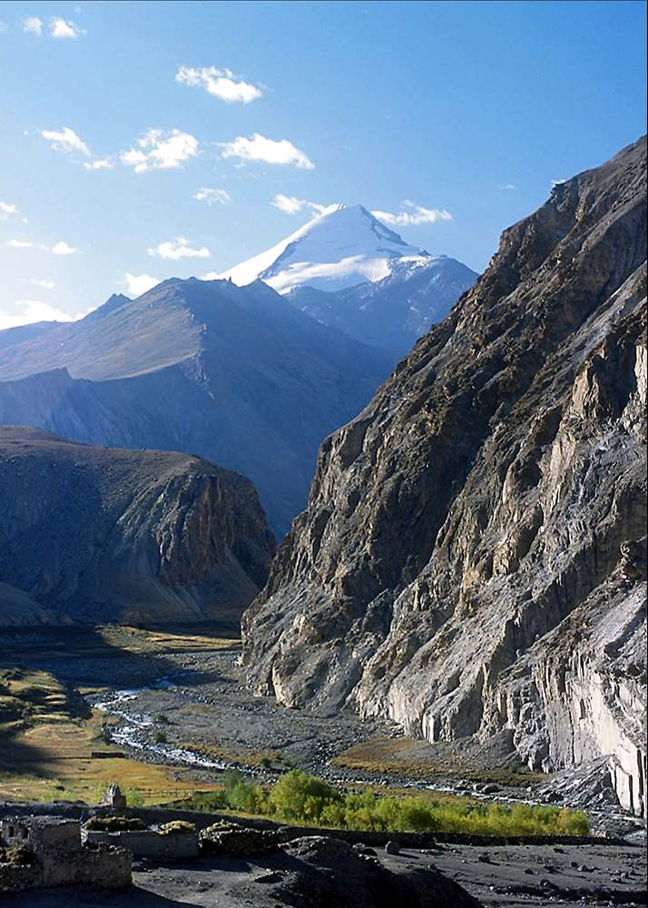
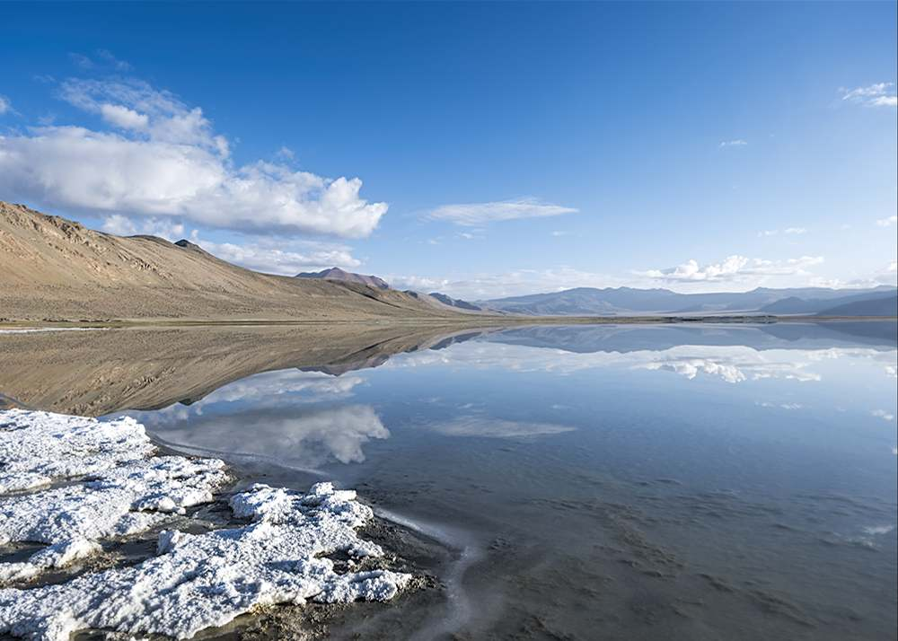

05 — Altitude
Trekking & Climbing
Ancient trading trails to villages the road never reached, and summit days on six of Ladakh's most accessible 6,000-metre peaks.
Trekking
Trails that predate the road
Until the late 20th century, much of Ladakh was accessible only on foot or on horseback. The trails connecting towns and villages have existed for centuries and are still in use — though as more roads are built, they grow quieter each year.
Most trails climb over high passes into areas that are still not accessible by road, where you can experience Ladakh much as it has been for time immemorial.
Whether you come for the spectacular landscapes, the unique culture, the living tradition of Tibetan Buddhism, or simply the experience of being on the roof of the world — you'll find it on the trails that reach into every part of Ladakh.
Trekking at a Glance
- Popular routesMarkha Valley, Chadar
- Duration3 to 12+ days
- SupportGuides, ponies, camp crew
- FitnessModerate to strenuous
- SeasonJun–Sep · Chadar: Jan–Feb
Gallery
Trails, passes & frozen rivers

Mountain Climbing
Six peaks, readily accessible, genuinely challenging
Ladakh offers several peaks that are readily accessible yet challenging enough to satisfy. Stok Kangri (6,130 m) is the most popular, easily reached from Leh and climbed in 3–5 days — the ascent from base camp to summit takes around 5–7 hours, with views into the Markha Valley and across the Zanskar mountains and Ladakh Range.
In most cases the peak can be climbed in one day from base camp. An early start — 5 to 6am — is essential to take advantage of firm morning snow conditions and to reach the summit and return the same day. Most ascents are not technically difficult, but are slow going given the altitude.
Peak Guide
| Peak | Height | Typical duration |
|---|---|---|
| Stok Kangri | 6,130 m | 3–5 days |
| Kang Yatse | 6,400 m | 6–7 days |
| Chanser Peak | 6,650 m | 6–7 days |
| Lungser Peak | 6,650 m | 8–9 days |
| Mentok Peak | 6,200 m | 5–6 days |
| Zozogong Peak | 6,250 m | 6–7 days |
| Matho Peak | 6,200 m | 5–6 days |

{kind=link}
{kind=link}
{kind=link}
{kind=link}
{kind=link}
{kind=link}

Next Steps
Ready for the trail, or the summit?
Tell us your experience level and how many days you have — we'll recommend a trek or a peak that matches.